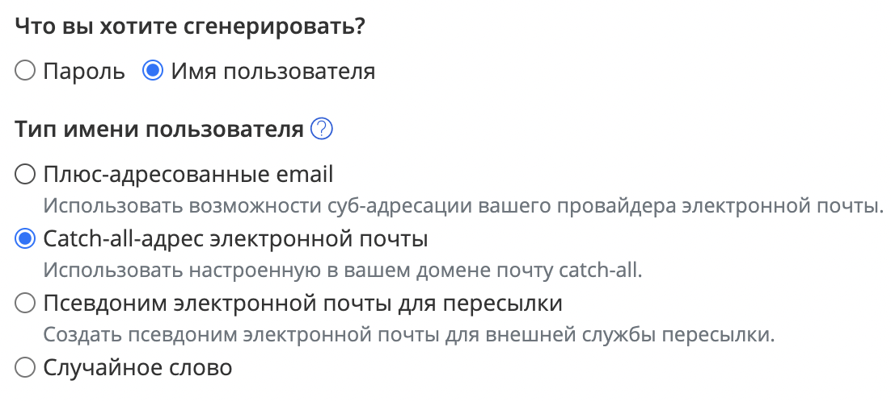

Existem muitos sites que permitem que você se encontre por telefone, e-mail ou até mesmo pelo nome completo em vazamentos de informações e bases de dados mescladas. Eles devem ser usados com cautela, pois qualquer pesquisa on-line pode ter um propósito adicional de enriquecer dados. Por exemplo, coletar um endereço IP, vinculando várias pesquisas de uma pessoa para coletar informações sobre seu ambiente.
Portanto, a opção preferida é sempre a busca independente em arquivos de vazamento.
Mas pode ser difícil: você precisa encontrar um arquivo (ou muitos arquivos, se precisar de uma busca exaustiva), entender sua estrutura e realizar uma busca eficaz.
Se você optou pelo caminho mais simples, recomendo usar esses recursos em ordem decrescente de riscos:
Os mais famosos: Have I Been Pwned, apoiado por uma empresa de segurança conhecida e garantindo privacidade.
Outros:
Eles costumam fornecer acesso shareware, você pode encontrar diferentes sites pelas palavras-chave "verificar" e "vazamento":
https://t.me/PhoneLeaks_bot - busca por fontes de vazamento.
A maioria dos bots não indica a fonte de onde as informações são obtidas. Lista de alguns recursos: Google Spreadsheet.
Alguns dos sites listados acima também podem notificá-lo por e-mail se houver um novo vazamento com seus dados. Recomendo muito usar esse serviço se você leva uma vida virtual ativa.
O Gmail e outros serviços de e-mail mais comuns suportam caracteres especiais para criar alias para sua caixa de correio. O e-mail enviado a um alias chegará ao seu endereço de e-mail principal, mas você verá claramente de onde ele veio no campo Destinatário.
Por exemplo, `soxoj@protonmail.com` é equivalente a `soxoj+gitlab@protonmail.com`:
É **estritamente recomendado** usar esse recurso em todos os sites onde ele é suportado.
Assim:
Naturalmente, a coleta de vazamentos frequentemente usa a normalização de e-mails: remoção de partes semelhantes de alias e limpeza do excesso. Portanto, só podemos falar sobre mitigação de riscos, não uma proteção de cem por cento.
Deve ser feita uma menção especial sobre o fornecimento de endereços de e-mail **para o envio de recibos** para compras on-line.
De acordo com o parágrafo 2 do art. 1.2 da lei nº 54-FZ, o recibo deve ser enviado eletronicamente se o comprador tiver fornecido seu número de assinante ou um endereço de e-mail antes do pagamento.
Isso é usado por grandes bots do Telegram como o Eye of God: eles armazenam todas as informações de pagamento, **conectadas ao e-mail especificado**, às informações que o bot fornece.
Portanto, se você não estiver interessado no recibo, forneça um endereço de e-mail deliberadamente incorreto apontando para a fonte do vazamento, por exemplo, eyeofgod@receipt.com. Ou use os aliases mencionados, revelando explicitamente onde a caixa de entrada foi listada.
Portanto, se você não estiver interessado no recibo, forneça um endereço de e-mail deliberadamente incorreto apontando para a fonte do vazamento, por exemplo, eyeofgod@receipt.com. Ou use os aliases mencionados, revelando explicitamente onde a caixa de entrada foi listada.
Os sites têm abordagens diferentes para a precisão dos nomes e sobrenomes das contas. Alguns exigem que eles coincidam com os dados do passaporte (por exemplo, no VK), alguns os verificam apenas em documentos em caso de transações financeiras, e a maioria não os valida de forma alguma.
Você pode usar os truques listados abaixo, dependendo da rigidez das regras do serviço (ToS, Termos de Serviço). Mas antes de usá-los, aconselho fortemente a estudar quais sanções são possíveis se você especificar um nome inválido e avaliar esses riscos por conta própria.
Dessa forma, se esse nome for vazado em conjunto com um número ou e-mail, você saberá de onde veio a informação:
Isso se aplica principalmente à forma completa/abreviada do nome:
Mas devido a diferenças de idioma, um nome pode ter várias formas "latinas". Até mesmo os bancos frequentemente oferecem a opção de escolher a transliteração correta dos nomes. Portanto, o nome "Anatoly" pode ser expresso como:
Usando o gerenciador de senhas BitWarden para gerar alias de e-mail
O gerenciador de senhas BitWarden permite que você gere alias de e-mail aleatórios com um sinal de adição, bem como endereços de caixa de correio catch-all e até caixas de correio para encaminhamento.
Leia mais sobre esses recursos na seção "🥷 Nível Avançado" da seção de Caixa de Correio.
